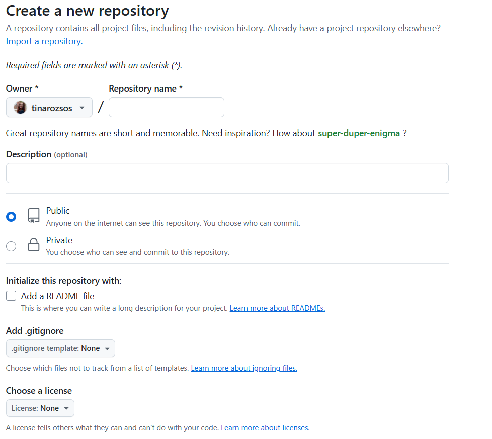
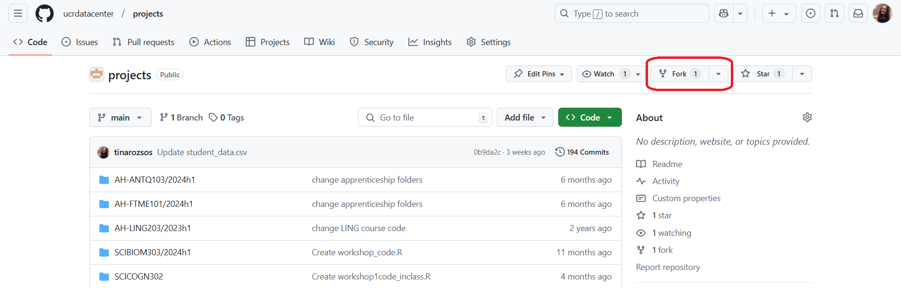
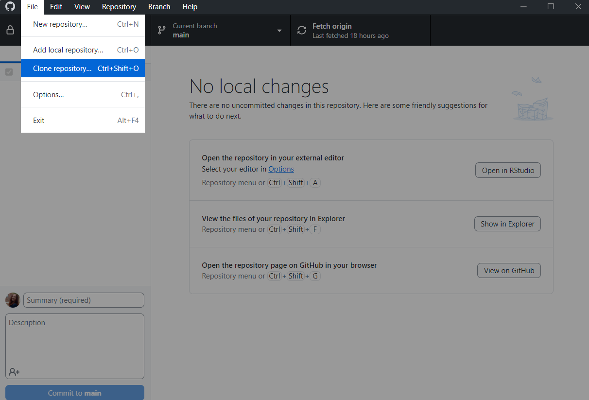
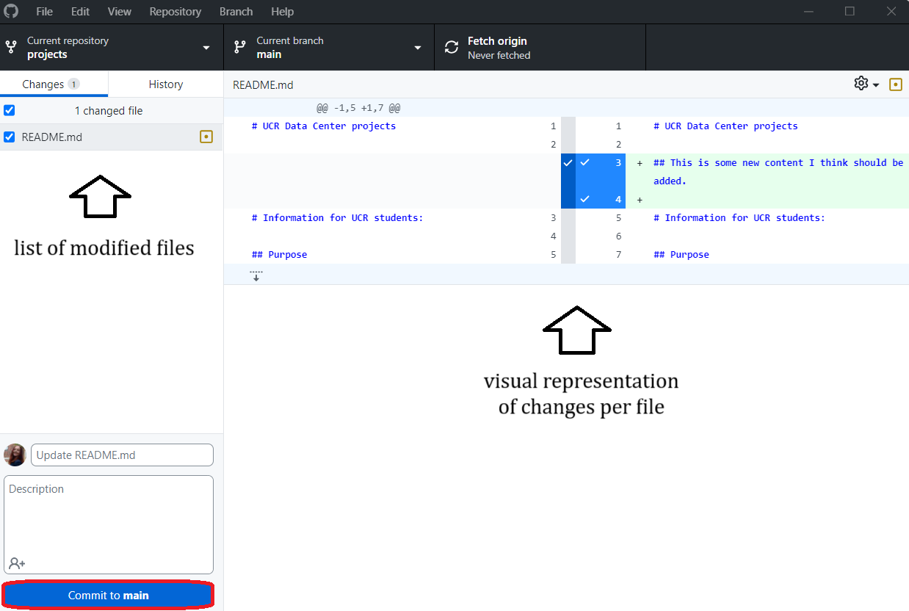
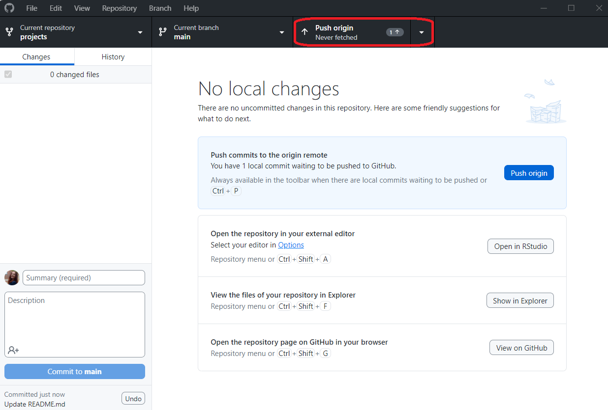
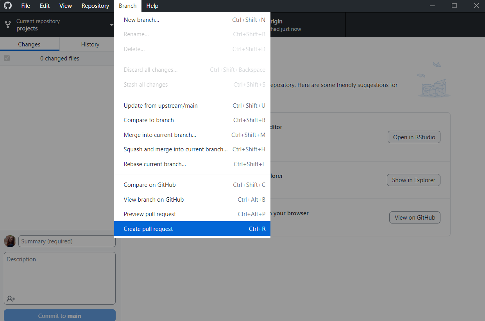

Data Center Apprenticeship: Efficient workflows with GitHub and Quarto
January 2025
Introduction
In this tutorial, we will explore how to use GitHub and Quarto to streamline your workflows, improve collaboration, and create professional, reproducible documents.
This tutorial is divided into two parts:
- An introduction to using GitHub for version control and collaboration. GitHub is a version control platform that allows you to track changes, collaborate with others, and manage your projects efficiently. GitHub Desktop is a graphical user interface that simplifies working with Git repositories, making it more accessible to users.
- An overview of creating and using Markdown documents with Quarto for documentation and reporting. Quarto is a tool for creating documents using Markdown, enabling you to generate reports, presentations, and analyses with ease. (If you are familiar with RMarkdown, Quarto is a very similar tool with additional features.)
Working with GitHub using GitHub Desktop
Introduction to GitHub
GitHub is a web-based platform designed for version control and collaboration. At its core, GitHub uses repositories (often abbreviated as “repos”) to organize and store project files, including their full revision history. A repository acts as a central storage location where you can manage code, track changes, and collaborate with others.
You can create your own repositories, access any other public repository, and contribute to open-source projects. You can also use GitHub to track issues, manage projects, and host documentation. For example, R packages are often hosted on GitHub, making it easy for users to install and update packages directly from the platform, or view the source code.
GitHub Desktop is a graphical user interface that simplifies working with GitHub repositories. It eliminates the need to use the command line, making using Git more accessible. In this section, we’ll explore the essential features of GitHub Desktop, including cloning and forking repositories, committing changes, pushing updates, and creating pull requests. These features help manage version control, ensure reproducibility, and facilitate collaboration.
In the following, we guide you through an example workflow using GitHub Desktop. This example is similar to the process you might follow if contributing to the Data Center’s projects.
Before we begin, make sure that you have created a GitHub account and installed GitHub Desktop on your computer.
Creating a Repository
A repository is a central location where you store your project files, track changes, and collaborate with others. When working on a project, you can create a new repository to manage your files and track changes over time.
On the GitHub home page, click the New button on the left hand sidebar to create a new repository. Doing so will open a new page where you can initialize the repo by entering the repository name and other details.
Generally, you’ll want to create repos in your personal account (i.e. you are the owner). The repository name should be descriptive and relevant to the project you are working on, and ideally as short as possible. Public repos are visible to everyone on the internet, while private repos are only visible to you and any collaborators you invite. Readme files are useful for providing an overview of the project and instructions for getting started – it is worth initializing one. Gitignore files and licenses are optional – gitignore files specify which files should be ignored by Git when pushing updates, while licenses specify the terms under which others can use your code. When using R-based projects, you may want to select the R gitignore template, which will ignore common files generated by R and RStudio that are not actually relevant from a version control perspective. You can add additional files, folders, and file types to the gitignore later if needed; an example of when you might do this is if you are working with large or sensitive data files.
Alternative to Creating a Repository: Forking a Repository
Forking creates your own copy of someone else’s repository, allowing you to make changes without affecting the original project. This is ideal when contributing to open-source projects or experimenting with new ideas. It is also a good way of making sure that the original repository remains stable, as any changes to it need to be approved by the repository owner.
When working with the DC’s repositories, you will typically fork the repository to your own GitHub account, make changes in your fork, and then create a pull request to propose changes to the original repository. This method prevents version clashes if multiple contributors are working on the same project.
The following demonstrates the forking process for the DC’s projects repo.
Steps of forking a repository:
- Navigate to the repository page in your browser:
https://github.com/ucrdatacenter/projects. - Click the
Forkbutton at the top-right corner of the page. - Select your GitHub account as the destination for the fork.
- Now you have a new repository in your account that is a copy of the original repository. It has the same title as the original repo, but you are the owner of it instead of the DC organization.
Forking is especially beneficial for collaboration. It ensures you can test and develop features independently before proposing changes to the main project.

Cloning a repository
Cloning a repository is useful when you want to work on an existing project (whether a new or forked repo) locally. It is the most convenient way of working with files, as you can make changes while working normally in your local directory and with any software installed on your computer.
Steps:
- Open GitHub Desktop.
- Go to
File > Clone Repository.... - Choose the repository you want to clone from the list (refresh the list if needed). Note: when cloning forked repos, make sure to clone your fork, i.e. the repository in your account, not the original repository in the DC organization.
- Choose a local path where the repository will be saved and click
Clone. It is a good practice to create aGitHubfolder in your main documents directory, and clone all repos there.

Making Commits and Pushing Changes
Commits are snapshots of your changes that you save to the repository. Pushing these changes updates the repository on GitHub, making them available to collaborators.
Steps:
- Make changes to the files in your local repository. E.g. open the project from your file explorer in RStudio, or open a file with your preferred text editor.
- Open GitHub Desktop, where your changed files will be listed.
- Write a clear and descriptive commit message summarizing your changes (e.g., “Fixed error in data cleaning script”).
- Click
Commit to mainto save the snapshot locally. - Push your changes to GitHub by clicking the
Push originbutton.
Commits and pushes are essential for maintaining a history of changes and sharing updates with collaborators. They ensure transparency and accountability in project development. They also allow you to go back to previous versions without difficulty if needed. Note that a commit is a local operation, i.e. it’s tracked locally, but not shared on GitHub or with any of your collaborators until you push the changes.


Creating a Pull Request
A pull request is a way to propose changes to the original repository from a fork. It allows the repository owner to review your modifications before merging them into the main repository. That is, pull requests are how you move the changes you made in your fork back to the original repository.
Steps:
- Open your forked repository on GitHub.
- Click the
Branchtab on the toolbar and selectCreate new pull request. This action will bring you to the GitHub page for creating a pull request. - Select the original repository as the base and your forked repository as the compare.
- Add a title and description for your pull request explaining the changes you’ve made.
- Click
Create pull request.
Pull requests are valuable for collaborative projects, as they allow for feedback and discussion before changes are finalized.

Note: creating a pull request does not notify the repo owners, so if you want them to merge your pull request, you need to inform them that you made a request. For DC repos, the easiest way to do so is to send an email to datacenter@ucr.nl.
Part 2: Introduction to Markdown Documents with Quarto
What is Markdown?
Markdown is a lightweight markup language used to create formatted text with plain text editors. It’s widely used for documentation because of its simplicity and readability. Quarto extends Markdown with additional features to create professional documents, including reports, presentations, and technical analyses.
If you are familiar with LaTeX, Markdown is a simpler alternative for creating documents. It allows you to focus on content rather than formatting, making it ideal for writing reports, notes, and documentation.
If you are familiar with RMarkdown, you can think of Quarto as RMarkdown with a lot of additional features.
Creating a Quarto Document
Quarto documents are ideal for reproducible research and professional reporting. To create a Quarto document, open RStudio, and instead of creating a plan R script, create a new Quarto document via File > New File > Quarto Document. If you don’t see this option, you may need to first install Quarto from quarto.org.
A new .qmd file will be generated, with some sample content. You’ll see three main elements in the file.
YAML Header
The YAML header defines metadata for the document, such as the title, author, and output format. It’s placed at the top of the file and surrounded by triple dashes (---).
For the output format, you can choose from various options, such as HTML, PDF, or Word. The output format determines how the document will be rendered. You can compile to HTML without any additional software (format: html), but for PDFs (format: pdf), you will need to have a LaTeX installation on your system. In addition, format: docx will create a Word document. For each output format, you can customize many features of the output in the YAML header. For example, this page shows the options for HTML output.
The YAML header also specifies global options for the execution and display of code. You can choose whether to display code and/or results, whether to evaluate code chunks, and whether to display messages, warnings, and errors. You can always override these options for individual code chunks.
Plain Text and Formatting
Use plain text for content and Markdown syntax for formatting:
Headings: Use
#,##, and###for different heading levels. Headings help structure your document.# Heading 1 ## Heading 2 ### Heading 3Lists: Create lists to organize information clearly. Use
-for unordered lists or numbers for ordered lists. You can create nested lists by indenting (4 spaces per level).- Item 1 - Item 2 - Subitem 2.1Text Formatting: Use
*italic*or**bold**to emphasize text.*italic*, **bold**
Code Chunks
Code chunks allow you to embed and execute code within the document. They are enclosed by triple backticks with a language specifier:
::: {.cell}
::: {.cell-output .cell-output-stdout}
```
Sepal.Length Sepal.Width Petal.Length Petal.Width
Min. :4.300 Min. :2.000 Min. :1.000 Min. :0.100
1st Qu.:5.100 1st Qu.:2.800 1st Qu.:1.600 1st Qu.:0.300
Median :5.800 Median :3.000 Median :4.350 Median :1.300
Mean :5.843 Mean :3.057 Mean :3.758 Mean :1.199
3rd Qu.:6.400 3rd Qu.:3.300 3rd Qu.:5.100 3rd Qu.:1.800
Max. :7.900 Max. :4.400 Max. :6.900 Max. :2.500
Species
setosa :50
versicolor:50
virginica :50
```
:::
:::Code chunks are essential for integrating analysis directly into the document, ensuring that when you compile your document, the latest version of the code is executed and the results are displayed.
If you want to override the global options for a specific code chunk, you can do so by specifying the options within the curly braces. For example, you can choose not to display the code in the output by setting echo = FALSE.
::: {.cell}
::: {.cell-output .cell-output-stdout}
```
Sepal.Length Sepal.Width Petal.Length Petal.Width
Min. :4.300 Min. :2.000 Min. :1.000 Min. :0.100
1st Qu.:5.100 1st Qu.:2.800 1st Qu.:1.600 1st Qu.:0.300
Median :5.800 Median :3.000 Median :4.350 Median :1.300
Mean :5.843 Mean :3.057 Mean :3.758 Mean :1.199
3rd Qu.:6.400 3rd Qu.:3.300 3rd Qu.:5.100 3rd Qu.:1.800
Max. :7.900 Max. :4.400 Max. :6.900 Max. :2.500
Species
setosa :50
versicolor:50
virginica :50
```
:::
:::Math Notation
Quarto supports mathematical notation using LaTeX syntax. For example:
Inline:
$E = mc^2$Block:
$$ \int_0^1 x^2 \, dx = \frac{1}{3} $$
Math notation is especially useful in technical and scientific reports.
Fenced Divs
A special feature of Quarto is fenced divs, which allow you to create custom blocks of content. Some are pre-defined, such as callout-note, callout-warning, and callout-tip, which create callout boxes with different styles. You can also define your own custom divs for specific content.
:::: {.callout-note}
## Note
This is a callout box.
::::Rendering the Document
To render a Quarto document:
- Save the
.qmdfile. - Click the
Renderbutton in RStudio (Ctrl+Shift+K).
Rendering produces the final output, such as HTML or PDF, making your analysis and documentation accessible.
Quarto Documentation
Quarto has very extensive and user-friendly documentation. You can access it at quarto.org.
Case study: Apprenticeship presentation slides with Quarto and RevealJS
During the workshop, we will create a presentation slide deck using Quarto and RevealJS. You may want to take this opportunity to experiment with Quarto’s capabilities, and also to start thinking about you final presentation.